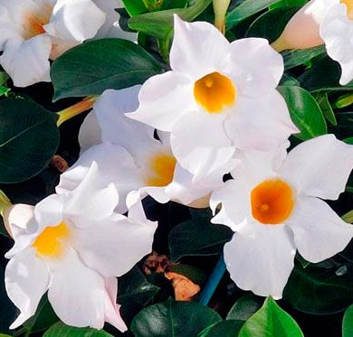
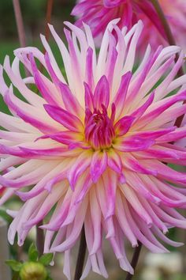
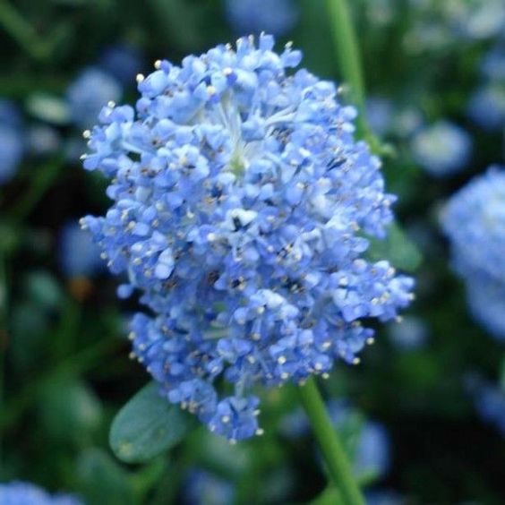
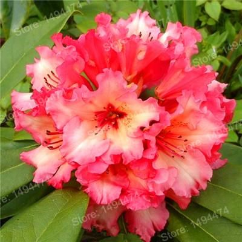
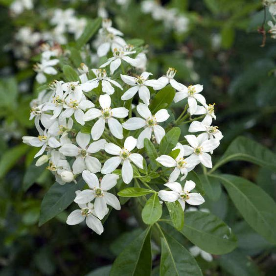
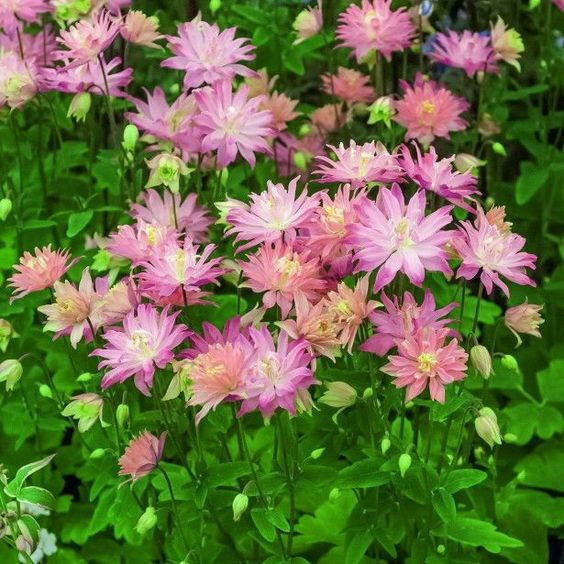

Léon Montagard & Hélio De Breyne | Tous droits réservés


Voici quelques fleurs courantes dans nos parcs et jardins:
| Nom des fleurs | Description | Avantages | Images |
| La dipladénia diamantina | Plante grimpante, touffue et idéale pour les petites jardinières. Son feuillage est vert foncé brillant avec des petites fleurs en trompette blanches, roses, rouges et jaunes ; elles se referment la nuit. Idéal pour les jardins exposés en plein soleil. | Floraison ininterrompue d'avril à fin octobre. La dipladénia diamantina supporte un, deux voire trois oublis d'arrosage. |  |
| Le dahlia label rouge | Plante au feuillage dense et très florifère qui se plante en pleine terre. C'est le premier végétal à fleurs à avoir obtenu la certification label rouge (le même que pour les produits de consommation). | Le dahlia apporte de la couleur au jardin et est facile d'entretien : à arroser uniquement en début de saison. Fleur labélisée par un jury d'experts. |  |
| Le lilas de Californie | Arbuste à feuillage persistant, avec une floraison généreuse. A noter, un parfum délicat pour certaines espèces. Les boutons pourpres s'ouvrent en fleurs bleues. L'exposition au soleil est conseillée. Son nom latin est le ceanothe. | Le lilas de Californie resiste parfaitement au froid, de moins 6 à moins 12 degrés selon les variétés. Son doux parfum se propage dans tout le jardin. |  |
| Le rhododendron | Le rhododendron est un arbuste au feuillage persistant avec une floraison très séduisante. Ses fleurs en trompette peuvent être de multiples couleurs. | Il n'est pas nécessaire de couper les fleurs du rhododendron. Idéal pour les jardins exposés à la mi-ombre. |  |
| L'oranger du merxique | Il s'agit d'un arbuste mexicain avec un feuillage persistant, aromatique et des fleurs blanches parfumées qui rappellent la fleur d'oranger. De nombreuses variétés existent. Exposition au soleil conseillée. Appelé aussi choisya. | Son parfum embaumant, très séduisant. |  |
| La clématite à grandes fleurs | La clématite est une plante aux couleurs flamboyantes avec une floraison généreuse. Fleurs simples, doubles voire triples. | Palissée contre un mur ou sur un support, la clématite à grandes fleurs sera du plus bel effet. |  |
Léon Montagard & Hélio De Breyne | Tous droits réservés